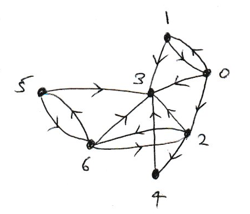

2. Computing with Graphs#
In this section we learn how to use a computer to perform the analysis of graphs studied in Section 1. The main goal is to develop an algorithm which computes path distances between nodes in a graph, by implementing a variant of the breadth first search algorithm.
2.1. Graph Representation#
In Python, we can represent a graph’s adjacency list as a list-of-lists, where the element at index i is a list containing the nodes connected directly to node i.
For example, consider the directed graph of the C Elegans egg-laying circuit. The nodes have been labelled 0 to 6 rather than 1 to 7, in order to conform with Python’s zero indexing convention.

The graph’s adjacency list is given by:
c_elegans_graph = [[1, 2, 3], [0, 3], [3, 4, 6], [], [3], [3, 6], [2, 3, 5]]
The neighbours of node i (the nodes connected directly by a directed edge from node i) are simply the ith element of c_elegans_graph:
i = 5
print("Node", i, "is connected directly to :", c_elegans_graph[i])
Node 5 is connected directly to : [3, 6]
We can use this adjacency list representation to answer local questions about the graph. For example, to determine whether node i is directly connected to node j, we can use the python in keyword.
def is_directly_connected(adj, i, j):
return j in adj[i] # returns True if j in adj[i]
i = 0
j = 5
print("Node", i, "is directly connected to node", j, ":",
is_directly_connected(c_elegans_graph, i, j))
Node 0 is directly connected to node 5 : False
2.2. Walks and Paths#
Recall that a length-\(n\) walk is a sequence of \(n+1\) nodes connected by \(n\) edges in a graph. A length-1 walk is simply two nodes directly connected by an edge, so the nodes that can be reached from node i by a length-1 walk are the nodes in the ith element of the adjacency list.
We can extend this idea to consider length-2 walks. Which nodes can be reached starting at node i and following exactly two edges? In other words which nodes can be reached via a length-2 walk from node i?
The function length_2_walk_nodes(adj, i) below returns a list of nodes that can be reached from node i by a length-2 walk. The outer for loop iterates over each of the neighbours of node i; the inner loop interates over the neighbours of the neighbours of node i. To avoid repetitions, each node found is only added to node_list if doesn’t already exist in the list.
def length_2_walk_nodes(adj, i):
node_list = []
for j in adj[i]:
for k in adj[j]:
if not k in node_list:
node_list.append(k)
return node_list
length_2_walk_nodes(c_elegans_graph, 0)
[0, 3, 4, 6]
Exercise 2.1
Write a function length_3_walk_nodes(adj, i) which returns all nodes reachable via a length-3 walk from node i. Check that it works in the case of node 0 of the egg-laying circuit.
2.3. Path Distance#
The path distance between two nodes in a graph is the number of edges in the shortest path between them.
The goal of this section is to develop a Python function which determines the path distance between nodes in a graph. In other words, given an adjacency list of a graph, and two nodes i and j, what is the length of the shortest path between them?
Consider the following proposed algorithm:
If
i == jthen they are the same node and the shortest path has length zero.Otherwise, determine all nodes reachable by a length-1 walk from node
i. Ifjis amongst these nodes then the shortest path has length1.Otherwise, determine all nodes reachable by a length-2 walk from node
i. Ifjis amongst these nodes then the shortest path has length2.Continue in this manner until node
jis reached.
Unfortunately this algorithm as described cannot in be implemented in Python!
Exercise 2.2
Why do you think it is impossible to write a program which works in this manner? (Hint: what would a function length_n_walk_nodes(adj, i, n) look like?)
Instead, we will construct an algorithm based on breadth first search.
2.4. Breadth First Search#
Breadth first search works by traversing the graph in levels from a starting node. The first level consists of all nodes connected directly to the starting node, the second level consists of all nodes connected directly to level-1 nodes, and so-on. The tricky part of the algorithm is to ensure that we don’t visit any nodes twice by keeping track of ‘already visited’ nodes.
A Python function which implements the breadth first search algorithm is shown below. The arguments of the function bfs(adj, i) are the adjacency list adj and starting node i. It returns a list of nodes in the order that they are visited by the breadth first search algorithm.
The returned list has the property that nodes appearing earlier in the list are closer (in terms of path distance) to node i than nodes appearing later in the list.
def bfs(adj, i):
visited = [i]
frontier = [i]
while len(frontier) > 0:
next = frontier
frontier = []
for j in next:
neighbours = adj[j]
for k in neighbours:
if not k in visited:
frontier.append(k)
visited.append(k)
return visited
bfs(c_elegans_graph, 0)
[0, 1, 2, 3, 4, 6, 5]
Exercise 2.3
Apply the function bfs to node 2 of the egg-laying circuit. Compare the result to your answer to Exercise 1.5.
Which nodes are never visited? Why not?
2.4.1. The Algorithm Explained#
The algorithm works by maintaining two lists, visited and frontier. visited is used to store the nodes in the order visited; frontier is used to store nodes that have been visited, but whose neighbours have yet to be visited. At each iteration of the while loop, the list frontier is populated with the next layer of nodes. The while loop terminates once there are no further nodes to be visited in frontier.
Exercise 2.4
By adding a print function at an appropriate point in the function, determine which nodes are added to the frontier list at each iteration of the while loop for node 2 of the egg-laying circuit.
The previous exercise should give you a clue as to how the bfs function can be adapted in order to determine path distances.
Exercise 2.5
By adapting the bfs function, Write a function path_distances(adj, i) which returns an Numpy array of path distances from node i. That is, if
x = path_distances(adj, i)
then x[j] is the length of the shortest path from node i to node j. If there is no path from node i to node j then set x[j] = -1
Check that your function returns the correct values for the egg-laying circuit, as below.
>>> path_distances(c_elegans_graph, 2)
array([-1., -1., 0., 1., 1., 2., 1.])